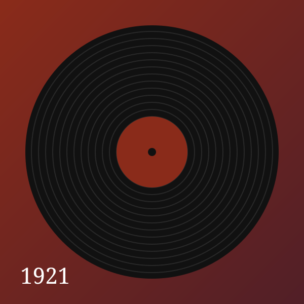

“Sì, vendetta” — Verdi, *Rigoletto* (Vocalion, ca. 1921)

Background: The Act III duet “Sì, vendetta” (“Yes, vengeance”) from Verdi's Rigoletto is an explicit operatic statement of revenge. Florida Atlantic University's Recorded Sound Archives (FAU RSA) has a digitized 78rpm item titled “Don Giovanni - La ci darem; Rigoletto - Si vendetta (Yes, My Vengeance),” with the second track attributed to Verdi. The archive item identifies catalogue number 60019, performers Evelyn Scotney and Giacomo Rimini, 78 rpm, 10-inch.
Why it fits / decision: Avoid collapsing Gilda's and Rigoletto's motives into one. The dramatic text and actual recording should be consulted before describing who sings each phrase and how the performance frames their agency.